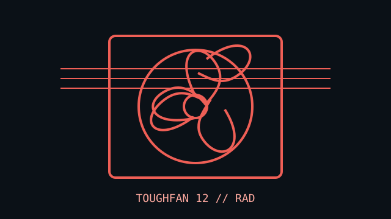

[ IDENTIFIED SKU // CL-F117-PL12BL-A ]
Thermaltake TOUGHFAN 12
A black, LCP-bladed 120 mm PWM fan in the TOUGHFAN high-static-pressure line. The exact single-fan pack SKU is CL-F117-PL12BL-A.

Exact identity: TOUGHFAN 12 High Static Pressure Radiator Fan, single fan pack; SKU CL-F117-PL12BL-A. Other Toughfan generations and bundles are not covered.
Specifications
| Frame | 120 × 120 × 25 mm |
|---|---|
| Speed / airflow / pressure / noise | 500–2000 RPM; up to 58.35 CFM; 2.41 mm H₂O; 22.3 dB(A), stated without the low-noise cable. |
| Bearing | Second-generation Hydraulic Bearing |
| Connector / control | 4-pin fan connector; PWM control. The included low-noise cable changes the maximum speed profile. |
| Electrical | 12 V DC rated; 0.12 A rated current; 1.44 W. |
| Fit and host compatibility | Standard 120 mm case or radiator mount with 25 mm depth. Thermaltake markets this model for high-static-pressure radiator use; confirm radiator hole pattern, screw length, cable clearance, and host current budget. |
Installation
Keep the low-noise cable's effect on speed in mind when setting a fan curve. Check the assembly thickness and mounting screws before fitting to a radiator.
Manufacturer sources
- Thermaltake — TOUGHFAN 12 single-fan product pageExact model family, radiator use, and product details.
- Thermaltake — TOUGHFAN 12 catalog and specificationsSecond manufacturer catalog record for the same single-fan product/SKU.